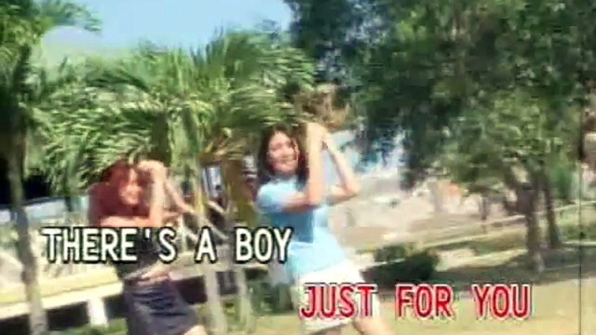
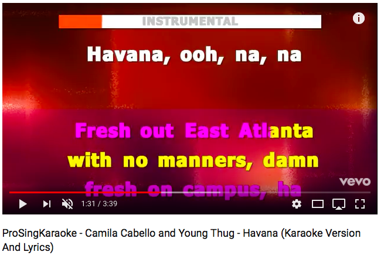
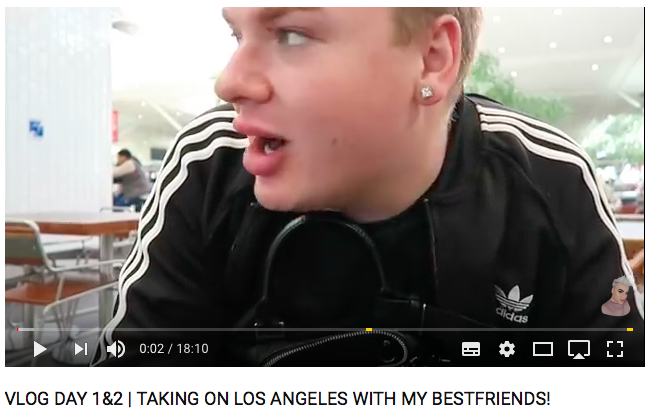
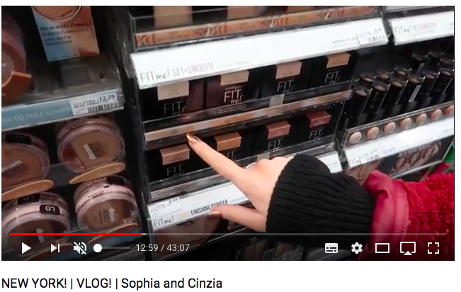
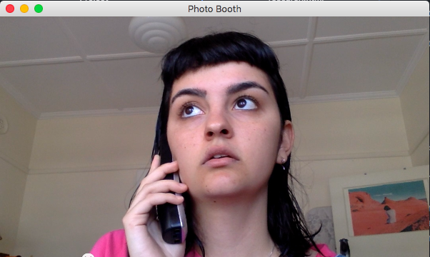
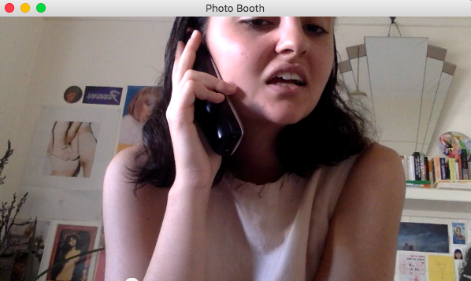

Idea one surrounds the concept of Karaoke and performance. Karaoke videos are outdated, nostalgic and cheesy, often using strange video footage in the background or some graphics.
I would create a karaoke video using tourists’ footage of Niagara Falls posted on Youtube, paired, or inspired by the “blog post” I found on UBU. This would be reposted on Youtube.
 Idea two talks about the current Vlogging culture existing on Youtube and the people who create them - usually 20 year olds who have “influencer” occupations.
This idea picks one phrase that is used very often in vlogs:
“So its the next day now”,and collages many instances of this phrase in difference vlogs in one video to be reposted on Youtube.  
Idea three looking into multi tasking. Often when I'm watching some video online I'm also texting.
I would be using photobooth videos of myself waiting On Hold and watching something on my screen at the same time.
Perhaps things would come up on the screen, or the viewing screen would have my screencast activity, as well as my photobooth footage of myself waiting.
 